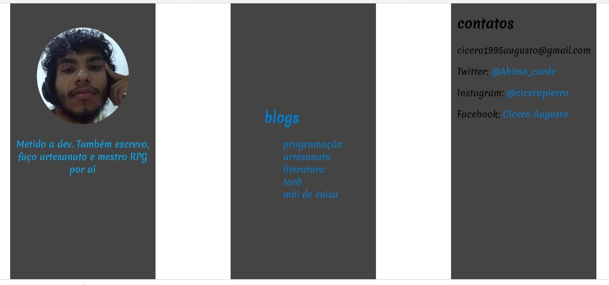
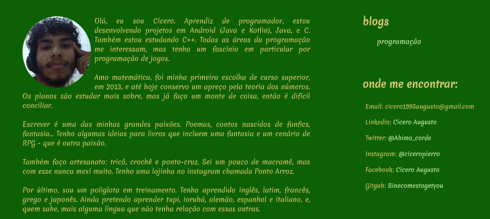
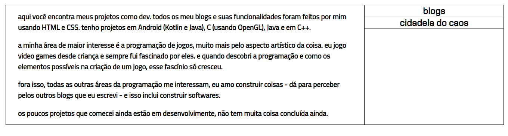

primeira cara da página oficial do blog. eu gostei bastante da paleta de cores,
mas achei melhor mudar por causa da legibilidade. escrevi esse textinho vagabundo
porque tava sem inspiração na hora, mas depois eu tive um surto e fiz aquele imenso
que tá agora.
primeira cara da página oficial do blog. eu gostei bastante da paleta de cores,
mas achei melhor mudar por causa da legibilidade. escrevi esse textinho vagabundo
porque tava sem inspiração na hora, mas depois eu tive um surto e fiz aquele imenso
que tá agora.
 tentei criar um layout em colunas, mas senti que alinhar isso ia ser horrível de fazer, e que o resultado não ia ficar muito bom vindo de alguém que tem um conhecimento nulo em design. desisti na hora que vi e substituí pelo layout atual.
 eu achei essa tão bonitinha. a paleta de cores era aquela cinza e azul, eu gostei bastante dela. mas achei um pouco sem vida, então mudei, coloquei um fundo preto, fonte roxa e os links em magenta. achei que ficou bonito, mas não era a coisa mais confortável do mundo de se ler. meu best me mostrou um instagram de paletas de cores, @color.hunt, e foi lá que achei essa paleta. Achei incrível, embora eu não seja um grande fã de verde.
 o layout da página inicial do blog de programação não ficou tão bom quanto eu imaginei. queria algo que lembrasse código, acho que vou mudar as cores de algumas palavras. também vou alterar os textos dos links, colocar barras para lembrar nomes de diretórios.